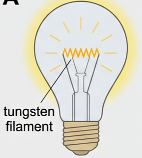
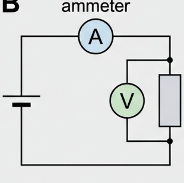
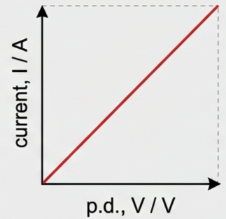
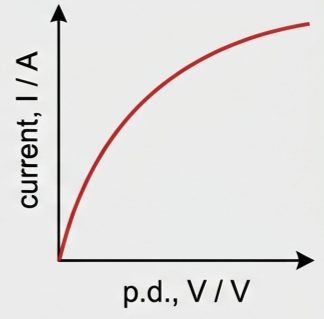
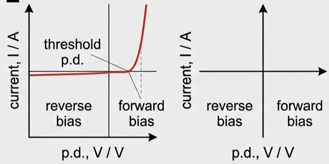
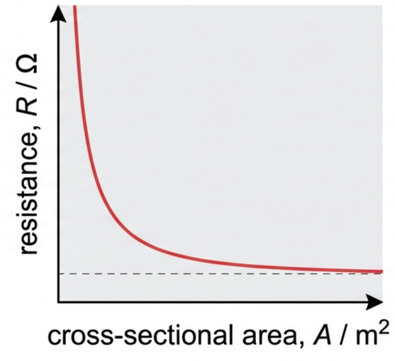
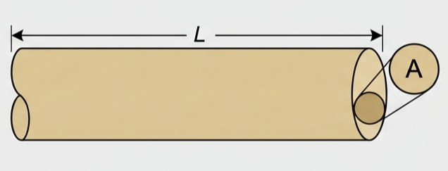
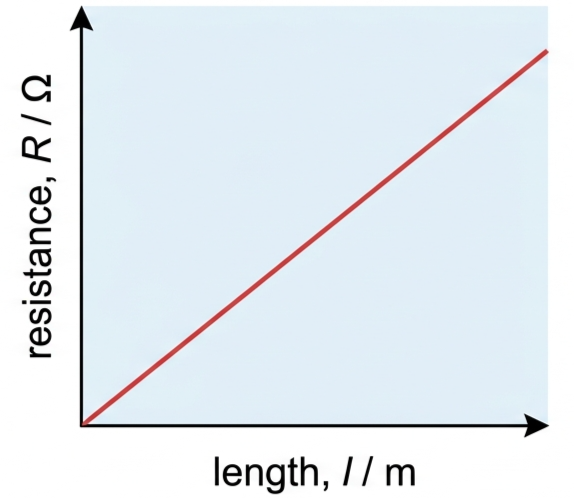
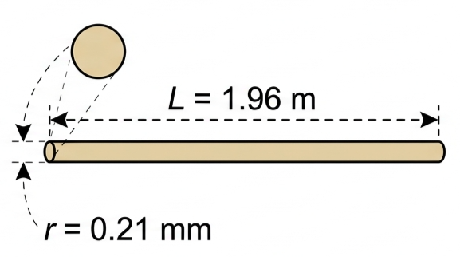

🔥 Hook – why does a lightbulb filament glow?
Pass a current through a thin coil of tungsten wire and it doesn't just carry the current quietly — it gets so hot that it glows white. For over a hundred years, this was how the world lit its homes: the incandescent lamp, a filament made deliberately resistive so that electrical energy is converted into heat and light.

⚡ Defining resistance
When the same potential difference is connected across different components, the currents produced vary. Components that produce relatively large currents are good electrical conductors, with low resistance; components that produce small or negligible currents are good electrical insulators, with high resistance. Substances such as silicon and germanium fall in between and are called semiconductors — the basis of the electronics industry.
Good electrical conductors (metals) are usually also good thermal conductors, because free electrons are important in both processes. When free electrons drift through a conductor, they collide with the vibrating metal ions of the lattice — this is the physical origin of electrical resistance. Particle vibrations decrease at lower temperatures, so cooling a metal reduces its resistance; heating a metal increases it.

| Quantity | SI unit | Symbol |
|---|---|---|
| length | metre | m |
| mass | kilogram | kg |
| time | second | s |
| electric current | ampere | A |
| temperature | kelvin | K |
| amount of substance | mole | mol |
| Derived unit | Quantity | Fundamental units |
|---|---|---|
| newton (N) | force | kg m s⁻² |
| pascal (Pa) | pressure | kg m⁻¹ s⁻² |
| hertz (Hz) | frequency | s⁻¹ |
| joule (J) | energy | kg m² s⁻² |
| watt (W) | power | kg m² s⁻³ |
| coulomb (C) | charge | A s |
| volt (V) | p.d. | kg m² s⁻³ A⁻¹ |
| ohm (Ω) | resistance | kg m² s⁻³ A⁻² |
📈 Ohm's law and I–V characteristics
The resistive behaviour of a component is best shown on a current–p.d. graph, called an I–V characteristic. The simplest possible relationship is that current and p.d. are directly proportional — this is Ohm's law, and a component that obeys it is described as ohmic. Metal wires at constant temperature are ohmic.

A filament lamp is the most common non-ohmic component. As the current increases, more collisions occur between free electrons and vibrating metal ions, more energy is transferred to the ions, their vibrations increase, and the temperature — and resistance — rises.

💡 Non-ohmic devices: diodes and LEDs
A diode only allows current to flow easily in one direction. Connected in forward bias (above a minimum threshold p.d.), it has very little resistance; connected in reverse bias, it has a large resistance, though a small "leakage" current is still possible.

Light-emitting diodes (LEDs) are semiconducting diodes that emit light when forward current passes through them. Individual LEDs are low-voltage components, so several are connected in series to light a whole room. LEDs have replaced most incandescent lamps (inefficient — they must get very hot to emit light) and fluorescent lamps (which pass electricity through mercury vapour) because they are far more efficient.
📏 Resistivity — how shape and material set resistance
Experiments on metal wires reveal three results: (1) resistance is proportional to length, \(l\); (2) resistance is inversely proportional to cross-sectional area, \(A\); (3) resistance depends on the metal the wire is made from. Combining the first two:
The constant depends on the material and is called resistivity, symbol \(\rho\):

We cannot speak of "the resistance of aluminium" without specifying its shape — but resistivity is a property of the material alone, equivalent to the resistance of a 1 m length with a 1 m² cross-section (a 1 m cube).
| Material | Resistivity / Ω m (at 20°C) |
|---|---|
| silver | 1.6 × 10⁻⁸ |
| copper | 1.7 × 10⁻⁸ |
| aluminium | 2.8 × 10⁻⁸ |
| iron | 1.0 × 10⁻⁷ |
| nichrome (heaters) | 1.1 × 10⁻⁶ |
| carbon (graphite) | 3.5 × 10⁻⁵ |
| germanium | 4.6 × 10⁻¹ |
| sea water | ≈ 2 × 10⁻¹ |
| silicon | 6.4 × 10² |
| glass | ≈ 10¹² |
| quartz | ≈ 10¹⁷ |
| Teflon (PTFE) | ≈ 10²³ |
The resistivity of metals increases with temperature — more ion vibration means more scattering, and the number of free electrons barely changes. In semiconductors and insulators, however, the number of charge carriers can increase sharply with temperature, so resistivity can decrease considerably as they get hotter. Glass, normally an insulator, can become a good conductor at 500°C.
📊 Graph mastery
| Graph type | Axes (X, Y) | Shape | What to read |
|---|---|---|---|
| I–V, ohmic component | p.d., \(V\) · Current, \(I\) | Straight line through the origin | Gradient = \(1/R\); \(R\) is constant |
| I–V, non-ohmic (filament lamp) | p.d., \(V\) · Current, \(I\) | Curve, gradient decreasing | \(R=V/I\) increases as current (and temperature) increases |
| Resistance–length (constant \(A\)) | Length, \(l\) · Resistance, \(R\) | Straight line through the origin | Gradient = \(\rho/A\) |
| Resistance–area (constant \(l\)) | Area, \(A\) · Resistance, \(R\) | Curve, decreasing (a \(1/A\) shape) | Plotting \(R\) against \(1/A\) instead gives a straight line through the origin, gradient \(\rho l\) |


✍️ Worked example — resistance from V and I (B5.2)
The current through an electrical component was 0.78 A when a p.d. of 4.4 V was applied across it. Calculate its resistance.
✍️ Worked example — resistance of a nichrome wire (B5.3)
Determine the resistance of a nichrome wire at 20°C, if it has a length of 1.96 m and a radius of 0.21 mm. Explain why the answer would be different at 100°C.

🌍 Real-world: resistors and lighting
A component manufactured specifically for its resistive properties is a resistor. Beyond fixed resistors, circuits also use variable resistors and potentiometers (three-terminal variable resistors used as potential dividers), light-dependent resistors (LDRs) (resistance depends on light intensity), and thermistors (resistance decreases as temperature rises). A high-voltage power cable's core is made from many thin strands of aluminium twisted together rather than one thick wire, because the strands stay flexible and resist cracking under mechanical stress, while the total cross-sectional area — and so the resistance — stays the same.
🚀 HL Extension — resistivity vs. temperature, quantitatively
For a metal near room temperature, resistivity increases roughly linearly with temperature: \(\rho \approx \rho_0(1+\alpha\Delta T)\), where \(\alpha\) is the material's temperature coefficient of resistance. This is why a filament lamp's I–V graph curves over — as \(T\) rises, \(\rho\) (and so \(R\)) rises too, at every point along the curve, not just at the end.
Challenge: a metal wire has resistivity \(1.0\times10^{-7}\ \Omega\,\text{m}\) at 20°C, with \(\alpha=5.0\times10^{-3}\ \text{K}^{-1}\). Estimate its resistivity at 120°C. (Answer: \(\Delta T=100\ \text{K}\), so \(\rho\approx1.0\times10^{-7}(1+5.0\times10^{-3}\times100)=1.0\times10^{-7}\times1.5=1.5\times10^{-7}\ \Omega\,\text{m}\) — a 50% increase.)
🔭 Looking ahead — combining components
Real circuits rarely contain just one component. When resistors are connected in series or in parallel, the current, p.d. and resistance obey simple combination rules:
These rules — and how to apply them — are the subject of the next lesson, Series and Parallel Circuits.
⚠️ Trap corner – common mistakes
| Misconception | Correct view |
|---|---|
| Resistance is a fixed property of a component that never changes | R=V/I is only constant for ohmic components at constant temperature; filament lamps, diodes and thermistors are all non-ohmic |
| Resistance and resistivity mean the same thing | Resistivity, ρ, is a property of the material alone; resistance also depends on the component's length and cross-sectional area (R=ρl/A) |
| Resistance = gradient of any V–I (or I–V) graph | Gradient only gives resistance directly for an ohmic (straight-line-through-origin) component; for a curve, calculate R=V/I at the point of interest |
| Higher temperature always means higher resistance | True for metals, but semiconductors and insulators can become less resistive as temperature rises, because more charge carriers become available |
Complete the statements:
✓ \(V \approx 38\ \text{V}\).
✓ (b) The heating element is cold when first switched on; lower temperature means less ion vibration and fewer electron-ion collisions, so resistance is lower until the element warms up.
✓ \(I \approx 1.2\times10^{-3}\ \text{A}\) (1.2 mA).
✓ \(V = IR = 2.0\times68.0 = 136\ \text{V}\).
✓ Equivalently, its resistance R=V/I is not constant, but changes as the current or p.d. changes.
✓ (b) In a semiconductor or insulator, higher temperature releases more charge carriers, increasing their number per unit volume enough to outweigh the increased vibration.
✓ Because R=V/I, a curve that bends this way has a smaller V/I ratio at large I than at small I, i.e. decreasing resistance.
✓ \(A = \dfrac{\rho}{\text{gradient}} = \dfrac{4.9\times10^{-7}}{14}\)
✓ \(A \approx 3.5\times10^{-8}\ \text{m}^2\) (exact value depends on the graph reading).
✓ R×A ≈ 0.40 Ω mm² at both points — a constant product confirms R∝1/A.
✓ (b) Converting: R×A ≈ 0.40×10⁻⁶ Ω m². \(\rho = \dfrac{RA}{L} = \dfrac{0.40\times10^{-6}}{0.56}\)
✓ \(\rho \approx 7.1\times10^{-7}\ \Omega\,\text{m}\) (readings vary with the graph).
✓ \(L_{\text{Al}} = \dfrac{1.7\times10^{-8}}{2.8\times10^{-8}}\times1.0 \approx 0.61\ \text{m}\).
✓ \(L \approx 1.2\times10^{4}\ \text{m}\) (about 12 km).
✓ (b) Many thin strands twisted together stay flexible and resist cracking as the cable bends and flexes (e.g. in wind, or being wound onto a drum), while a single thick wire of the same total area would be stiff and prone to fatigue fracture.
✓ \(\rho = \dfrac{RA}{L} = \dfrac{10\times1.96\times10^{-5}}{0.10}\)
✓ \(\rho \approx 2.0\times10^{-3}\ \Omega\,\text{m}\) — far below glass's room-temperature value of ≈10¹² Ω m, showing how dramatically heating lowers an insulator's resistivity.
✓ Ratio \(\approx \dfrac{10^{23}}{1.6\times10^{-8}} \approx 6\times10^{30}\).
✓ Metals like silver have huge numbers of free electrons available to carry charge; excellent insulators like Teflon have almost none, so it takes an enormous range of resistivity — over 30 orders of magnitude — to describe both.